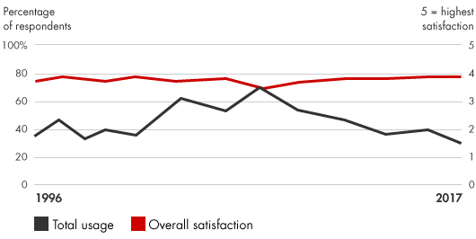
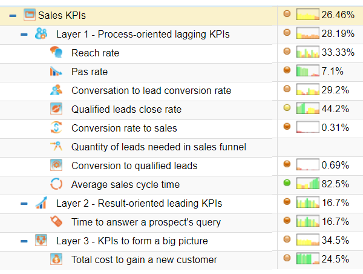

📘معرفی ابزار
کارت امتیازی متوازن عملکرد یک سازمان را تعریف میکند و ارزیابی میکند که آیا مدیریت به نتایج مورد نظر دست مییابد یا خیر. کارت امتیازی متوازن بیانیه رسالت و چشمانداز را به مجموعهای جامع از اهداف و معیارهای عملکرد ترجمه میکند که میتوان آنها را کمی و ارزیابی نمود. این اقدامات معمولا شامل مقولههای زیر میباشد:
- عملکرد مالی (درآمد، درآمدها، بازگشت به سرمایه، جریان نقدینگی)
- عملکرد ارزش مشتری (سهم بازار، معیارهای رضایت مشتری، وفاداری مشتری)
- عملکرد فرآیند کسبوکار داخلی (نرخ بهرهوری، معیارهای کیفیت، بههنگام بودن)
- عملکرد نوآوری (درصد درآمد حاصل از محصولات جدید، پیشنهادها کارمند، نرخ شاخص بهبود)
- عملکرد کارکنان (روحیه، دانش، جابجایی، استفاده از بهترین شیوههای نشان داده)
🆕بهروزرسانی ۱۴۰۵
این بخش در نسخهٔ آنلاین ۱۴۰۵ افزوده شده است. متن اصلی کتاب (آبان ۱۳۹۹) در بخشهای بعد بدون تغییر آمده است.
آمار و شواهد تازه
- چارچوب Kaplan–Norton امروز زیر نام «فرآیند ممتاز اجرای راهبرد» (Execution Premium Process) توسط Palladium توسعه یافته و کارت امتیازی را بخشی از مدیریت راهبرد میداند، نه صرفاً مجموعهای از شاخصها. (منبع: Palladium)
چه چیزی تغییر کرده؟
در عمل، کارت امتیازی امروز معمولاً روی داشبوردهای زنده (بهجای گزارش فصلی) اجرا میشود و با روشهای هدفگذاری مانند OKR ترکیب میشود. اصل کتاب ثابت است: نقشهٔ راهبرد، چهار منظر و ارتباط علّی بین شاخصها. تغییر مهم، خودکارشدن گردآوری شاخصها و کوتاهترشدن چرخهٔ بازبینی است.
نمونه ابزارها و نرمافزارهای امروزی
نامها صرفاً نمونهاند و توصیه یا تبلیغ تجاری نیستند؛ شرایط دسترسی و تحریمها را برای سازمان خود بررسی کنید.
منابع این بخش
🧩فرآیند اجرا
برای ساخت و اجرای یک کارت امتیازی متوازن، مدیران باید اقدامات زیر را انجام دهند:
- بیان چشمانداز و استراتژی کسب و کار
- شناسایی گروههای عملکردی که چشمانداز و استراتژی کسبوکار به نتایج آنها بیشترین پیوند را دارد (مانند عملکرد مالی، عملیات، نوآوری، عملکرد کارکنان)
- تعیین اهداف کوتاه مدت و بلند مدت که از دیدگاه و استراتژی کسبوکار پشتیبانی کنند
- تعیین معیارها و استانداردهای مرتبط و معنادار
- اطمینان از پذیرش اقدامات اصلاحی
- ایجاد بودجهبندی مناسب، پیگیری، ارتباطات مستمر و نظام پاداش
- جمعآوری و تحلیل دادههای عملکرد و مقایسه نتایج واقعی با عملکرد مورد نظر
- اقدام برای رفع شکافهای نامطلوب
💼موارد استفاده در کسبوکار
- شفاف کردن یا به روزرسانی استراتژی کسبوکار
- پیوند دادن اهداف راهبردی به اهداف بلند مدت و بودجههای سالانه
- دنبال کردن عناصر کلیدی استراتژی کسبوکار
- بکارگیری اهداف استراتژیک در فرایندهای تخصیص منابع
- تسهیل تغییرات سازمانی
- مقایسه عملکرد واحدهای کسبوکار توزیعشده جغرافیایی
- افزایش درک فراگیر از دیدگاه و استراتژی شرکت
📈میزان محبوبیت در طی زمان

🧪نمونه ابزار / الگو

در این نمونه کارت امتیاز متوازن بر روی تطبیق عملکرد بخش فروش با استراتژیهای سازمان تمرکز شده است. مشاهده میشود که در آن سه سطح شاخص کلیدی (KPI) تعریف شده است و هر کدام طی فرآیند تحلیل و طراحی به بخشی از اهداف و ماموریتهای سازمان پیوند خورده است. برای مشاهده جزییات بیشتر به Bscdesigner [۲] مراجعه شود.
⬇️چکلیست قابلدانلود
چکلیست اجرایی این ابزار را دانلود و در سازمان خود تکمیل کنید. گامها از فرآیند اجرای همین صفحه برداشته شدهاند و ستونهای مسئول، موعد و وضعیت برای پیگیری تیمی خالی گذاشته شده است.
⬇ دانلود چکلیست (Word) · کارتهای امتیازی متوازن📚مراجع مطالعه بیشتر
- Bain & Company, Balanced Scorecard: https://www.bain.com/insights/management-tools-balanced-scorecard
- Bscdesigner, HR KPIs and Talent Strategy Scorecard, Sales Scorecard with 3 Levels of KPIs: https://bscdesigner.com/sales-scorecard.htm
- Templatelab, Balanced Scorecard Examples & Templates, http://templatelab.com/balanced-scorecard/
- Epstein, Marc, and Jean-François Manzoni. “Implementing Corporate Strategy: From Tableaux de Bord to Balanced Scorecards.” European Management Journal, April 1998, pp. 190–203.
- Kaplan, Robert S., and David P. Norton. Alignment: Using the Balanced Scorecard to Create Corporate Synergies. Harvard Business School Press, 2006.
- Kaplan, Robert S., and David P. Norton. “The Balanced Scorecard: Measures That Drive Performance.” Harvard Business Review, July 2005, pp. 71–79.
- Kaplan, Robert S., and David P. Norton. Strategy Maps: Converting Intangible Assets into Tangible Outcomes. Harvard Business School Press, 2004.